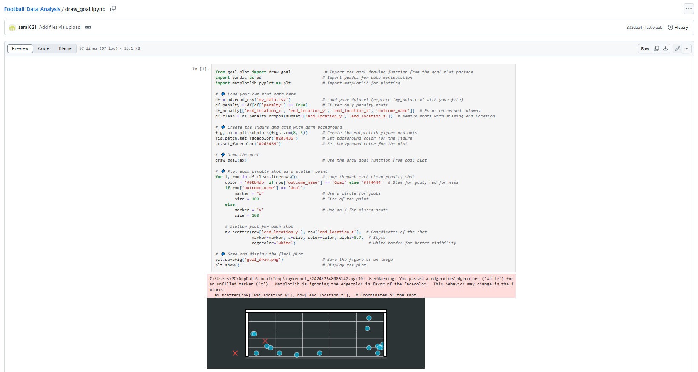
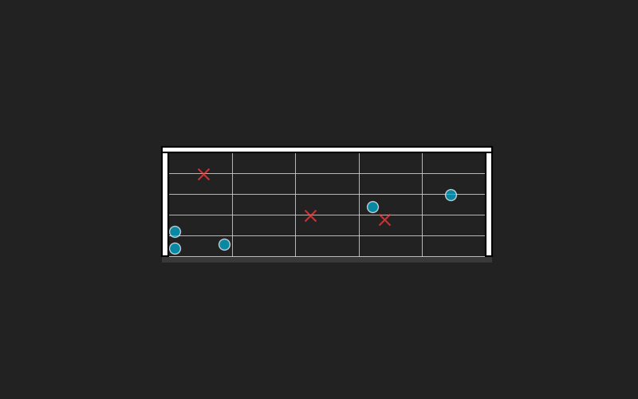
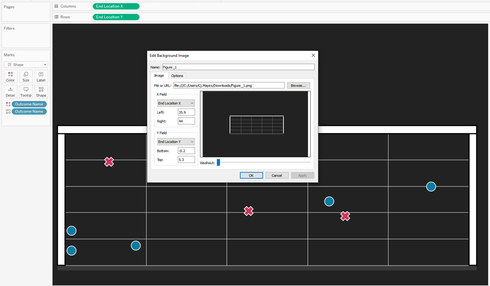
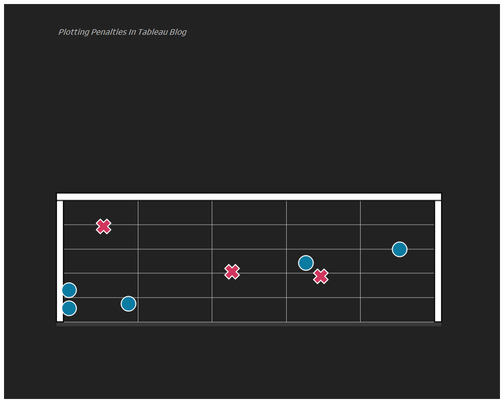

Hi all,
You may have seen recently Sara's post about an easy method for creating penalty shot charts using matplot lib.

& of course this code is adaptable as you like, but offers a great basis for charting.
You can find a copy of the tutorial and test dataset I created in my repo.
It imports necessary libraries (goal_plot for drawing a goal, pandas for data handling, matplotlib for visualization).
It loads shot data from a CSV file ('my_data.csv') and removes any rows with missing location data.
It sets up a dark-themed plot (black/dark gray background).
It draws a goal outline on the plot using the imported draw_goal function.
For each shot in the dataset, it:
Colors goals blue and misses red
Uses circle markers (○) for goals and X markers for misses
Plots each shot at its end location coordinates (x,y)
Finally, it saves the visualization as 'goal_draw.png' and displays it.
This visualization allows you to see where shots ended up in relation to the goal, with a clear distinction between successful goals and missed shots. The code is using the shot's end_location_x and end_location_y coordinates for positioning the markers on the plot.
I tried it myself and dumped in a bunch of random points that you can find in the repo, and created the following.

Now if we want to recreate this in Tableau we will want to join to the raw data.
Put End Location X on Columns
Put End Location Y on Rows
Outcome Name on colour and Shape.
We will want to configure the background map.
Go to Map -> Background images.

Configure the x and y co ordinates to scale to the same values that you have within your dataset.
Nice and simple.

It can get a little bit tricky with the conversions. Firstly, the x,y,z end location scale of your original data, you will want it to fit that of the package.
I saved the goal as an image without any points for when loading it into Tableau as the background image, you can do this just by running the code but excluding the scatter point lines.
Then in background images of Tableau its a little trial and error, until you see that the image you have from plotting it in python matches that on your Tableau screen.
Going further:
Try use your own data from a recent match.
Create a different chart for each team in a league.
LOGGING OFF,
CJ